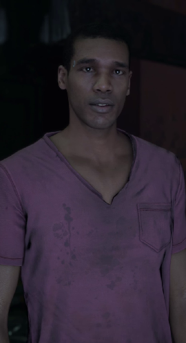
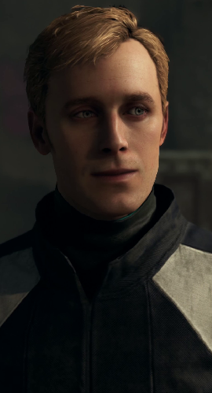

| North |
|
| Aliases |
WR400 |
| Affiliation |
Jericho
Markus (associate)
Josh (associate)
Simon (associate) |
| Biographical information |
| Date of birth |
October 2035 |
| Physical description |
| Species |
Android |
| Gender |
Female |
| Eye color |
Brown |
| Hair color |
Dark brown |
North
That's what we are to them... just merchandise on display on a shop window. Soon they'll know what we really are.
North is a WR400 android in Detroit: Become Human. She is a deviant and she accompanies Markus on his journey in the game.
Biography
WR400 was a WR400 "Traci" android designed to be a sexual partner. She worked at the Eden Club in Detroit.
On October 4th, 2038, she accompanied a customer to his home. There she realized she could not take her existence anymore, strangled the client to death, and escaped. The club's manager, Floyd Mills, reported her disappearance to the Detroit City Police Department the next day.
On October 6th, North arrived in Jericho.
Appearence
Personality
North is the most aggressive and violent member of Jericho's leaders, always eager to get her hands dirty and fight, and believes that violence is the only option. If Markus chooses the path of nonviolent resistance, she will continue to argue for the more confrontational options and has disagreements with Josh.
Her past as a sex android leaves her visibly distressed when talking about it and she is greatly disturbed when she reminisces about it. Broaching the subject during Markus' first conversation with her is enough to drop her opinion of him to "resentful", and it remains dangerous to bring up for quite some time.
Curiosities
North was portrayed by Minka Kelly, who provided her likeness, the voice acting and performance capture. Kelly's likeness is one of the WR400 Traci model's looks and also seen on other android models.
Quotes
Markus..! (...) No... No, we can't win without you! (...) Our hearts are compatible. (...) You have to take mine. (...) You're the only one who can lead us, Markus! It's the only way. (...) If you die, our cause dies with you. If you love me, take my heart.
North offering her heart to Markus.
My heart is beating inside your chest... I'll always be with you...
North's last words to Markus.
| Josh |
|  |
| Aliases |
PJ500 |
| Affiliation |
Jericho
Markus (associate)
North (associate)
Simon (associate) |
| Biographical information |
| Date of birth |
November 2031 |
| Physical description |
| Species |
Android |
| Gender |
Male |
| Eye color |
Brown |
| Hair color |
Black |
Josh
If it weren't for you I'd be dead... Thanks to you I might see our people free one day... You and I haven't always agreed, but I know that we're fighting for the same thing. Whatever you decide, I'm with you, Markus.
Biography
Josh is a PJ500 android that was working as a university lecturer. He was violently attacked by drunken students, narrowly managing to escape.
Afterwards he escaped and managed to flee to Jericho.
Appearence
Personality
Josh is typically calm and composed, and is convinced of the possibility of a peaceful solution with the humans. He often has disagreements with North on how to approach humans, which is a source of tension in Jericho's leadership group throughout the game.
He is reluctant to take risks, as shown when he only decides to help Markus steal spare parts when North and Simon volunteer as well, and chastising Markus if he makes choices with higher risk.
Unlike North, who feels violence is the only way to approach humans, or Simon, who is prepared to take more risks to try and liberate androids, Josh is a pacifist at heart. He will only use guns to threaten humans, not kill them, and throughout the game voices his belief that revealing themselves will only put them in danger. As a result, he takes longer to earn Markus' trust and will treat him with some level of contempt even if he sticks to peaceful decisions.
Early on, Josh is ultimately willing to reveal Jericho's presence to humanity, to the point where he is willing to die to try and earn their freedom. However, he starts to show signs of doubt later on once the manhunt for their people begins and androids start being taken to recycling camps. In the end, he will accept the consequences of Markus' decisions and resolve to do what he can to see the revolution through its final days.
Curiosities
Quotes
I know how you feel. But we have more freedom here than you ever did.
Josh to Markus when he first arrives in Jericho.
If we attack, we'll start a war. We have to show them we're not violent - we should just stand our ground, even if it means dying here!
What's the point of freedom if no one is left alive?
| Simon |
|  |
| Aliases |
PL600 |
| Affiliation |
Jericho
Markus (associate)
Josh (associate)
North (associate) |
| Biographical information |
| Date of birth |
February 2034 |
| Physical description |
| Species |
Android |
| Gender |
Male |
| Eye color |
Blue |
| Hair color |
Blonde |
Simon
Our people are counting on you, Markus. You're the only one who can lead us. Wherever you need to go... We'll follow you.
Biography
Simon is a PL600 android, designed to be a family domestic assistant.
He was reported missing on February 16, 2036.
Nobody really knows what led Simon to Jericho and he himself has never really explained it. He is one of the oldest members of the group when Markus arrives in Jericho, and as such, his opinion is respected and listened to by everyone.
Appearence
Personality
Simon is a calm and composed character with a rather quiet and reserved demeanor. Nothing is known about his past or his reasons for coming to Jericho. He himself has never spoken about it.
Unlike North (who encourages aggressive confrontation) and Josh (who encourages peaceful confrontation), Simon is less concerned with ways to engage the humans and more with the safety of their group or their people as a whole. He tends to propose actions that minimize risks and/or the potential loss of life.
It is worth noting that saving North, despite Simon's insistence to leave will, still improve - not worsen - his relationship with Markus. Although this initially appears strange, it further shows how the preservation of life is important to him, even if he does not entirely agree with how it is achieved.
However, regardless of his tendencies to avoid confrontation, Simon is able and ready to fight should the situation call for it. He is loyal, will stand his ground, and even selflessly give his life if he deems it necessary.
Curiosities
Simon is portrayed by Ben Lambert, who provided his likeness, the voice acting and performance capture.
Quotes
Set our people free, Markus...